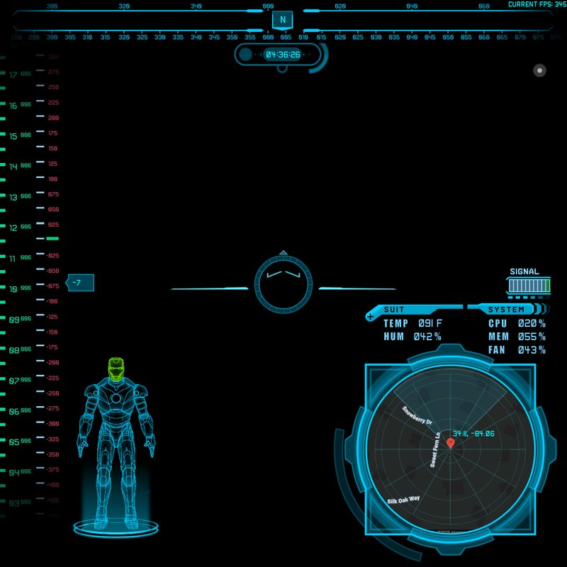
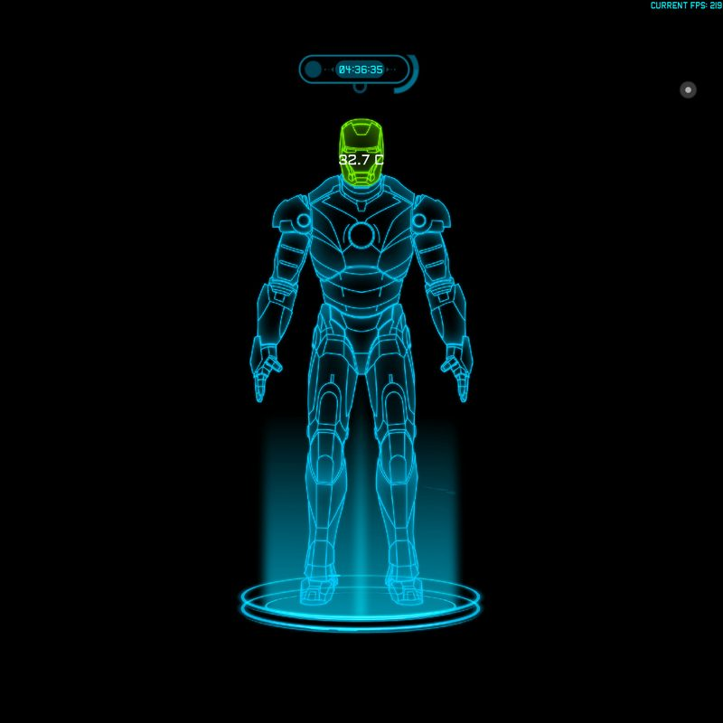
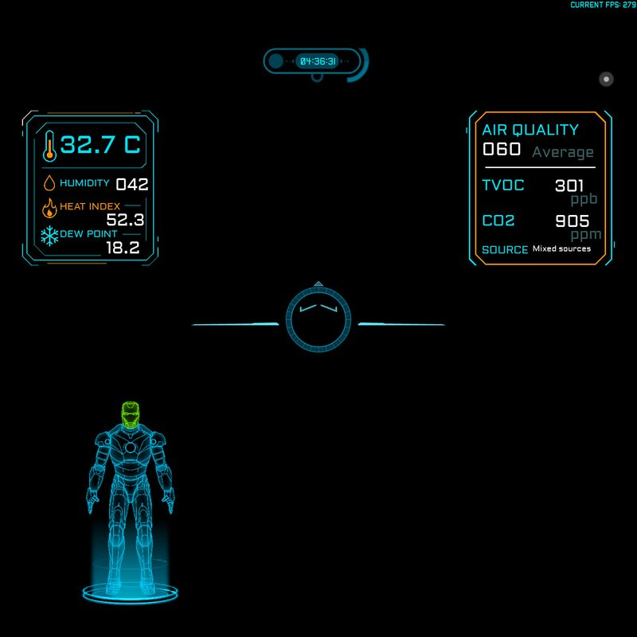
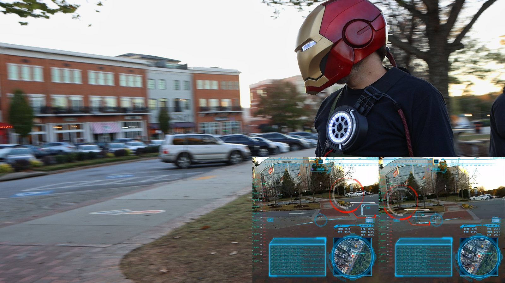

M.I.R.A.G.E.
Multi-Input Reconnaissance and Guidance Environment.
A heads-up display you can actually wear.
Overview
I built MIRAGE as a dual- or split-display AR heads-up display for cosplay helmets — though it's portable to plenty of other uses. It renders real-time HUD elements — gauges, compass, pitch ladder, maps, sprites, and live text — onto small displays with passthrough camera video for see-through operation.
The system runs on NVIDIA Jetson or Raspberry Pi, using SDL2 for hardware-accelerated rendering. All HUD elements are defined in plain-text configuration files with hot-reload — no code changes needed to redesign the entire display layout.
HUD Elements
Over 25 HUD element types render real-time data from sensors, GPS, system metrics, and AI state directly onto the display.
- Analog and digital gauges with animated needles
- Compass rose with bearing indicator
- Pitch ladder with horizon line
- Mini-map with GPS position
- Animated sprites and transitions
- Dynamic text with sensor data binding
- Battery level, CPU/GPU temp, network status

Up to 16 HUD Layouts
Switch between up to 16 possible HUD layouts, all user-configurable, with animated transitions. Each screen is a configuration file that defines element positions, data bindings, and visual style.
- Voice-switchable — ask DAWN to change the HUD, hands-free
- Combat, navigation, diagnostics, and custom layouts
- Animated transitions between screens
- Hot-reload — edit config, see changes instantly
- Per-screen color themes and opacity



Recording & Live Streaming
H.264 encoding captures the HUD output in real time — hardware-accelerated on Jetson, or software encoding on other hosts. Record locally, stream to YouTube Live, or do both at once; with hardware encoding it runs at full framerate with minimal CPU overhead.
- Hardware (NVENC / V4L2) or software (x264) H.264 encoding
- Simultaneous record + stream
- YouTube Live RTMP streaming
- Configurable bitrate and resolution

AI Vision Integration
MIRAGE can capture snapshots from the helmet camera and send them to DAWN for LLM-powered visual analysis. Ask your AI assistant what it sees — from the inside of the helmet.
- Snapshot capture from helmet camera feed
- Forwarded to DAWN's vision API for analysis
- Results displayed on HUD or spoken via TTS
Hardware
Small displays with passthrough camera video, driven by Jetson or Raspberry Pi.
| Component | Recommendation | Notes |
|---|---|---|
| Display | Horizon HUD displays (dual) | Passthrough camera video, one per eye |
| Compute | Jetson Orin Nano / RPi 5 | Jetson for recording + streaming |
| Camera | CSI or USB camera module | For AI vision snapshots |